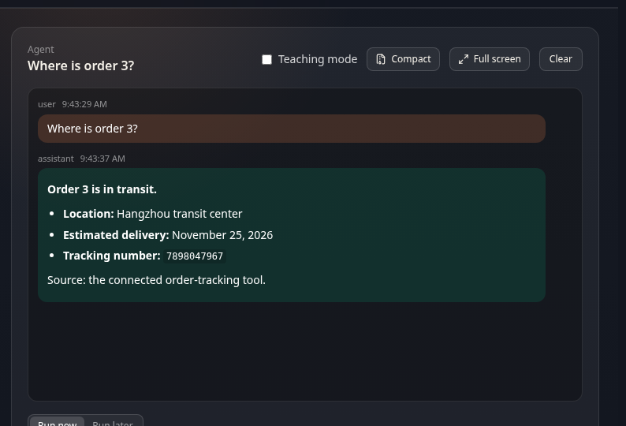

Look up records with MCP
Connect local or remote tool servers and choose which tools the agent can call.
“Where is order 3? What’s its tracking number?”Read about tool connections
Run your own AI agent on Raspberry Pi, Ubuntu, or macOS. Connect tools through MCP, ask questions about your documents with RAG, and follow tasks in a web console.

Connect local or remote tool servers and choose which tools the agent can call.
“Where is order 3? What’s its tracking number?”Read about tool connections
Import manuals, FAQs, or policies. The agent searches for relevant passages and can cite them.
“Who pays return shipping for a defective item? Cite the policy.”Set up a knowledge base
Choose the signed package for your platform, then open the web console to set up a model and send your first message.